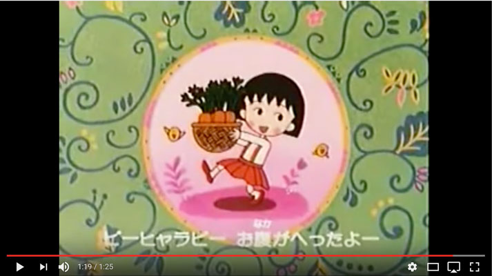

shuyao bian:
OSTs from Sherlock (BBC series) brings me back to 12th grade
Preparing for college admission
I listened to those a lot at that time
sarah im:
orchestra ( I played violin)
sound of children playing (brother + sister+ 4 years of TA-ing for kids at korean school)
Time Walking through Memories by Nell
kaitlyn nee:
motorcycle/scooters on the streets
OH actually some old Japanese songs are nostalgic for me because my grandpa used to listen and sing them all the time (stopped when I was in high school cuz of old age, but he kept going for a while for memories and also to exercise his throat) if you want song names I can send you names but yeah back then Japan rule Taiwan so my grandpa speaks Japanese
I listen to the songs still too
https://www.youtube.com/watch?v=ARQhU4-2kYw
https://www.youtube.com/watch?v=tJLXY3k-b0Y&index=
5&list=PLA378A2DDB9A2A64E
https://www.youtube.com/watch?v=n3lgQ0stg-E
This one is my fav:
https://www.youtube.com/watch?v=UNP6XTFcjvc&index=
93&list=PLA378A2DDB9A2A64E
https://www.youtube.com/watch?v=blsi27mftTc&index=
19&list=PL1A59027D93AD4BA9
here to read more stories from kaitlyn
laura lin:
the ending theme https://www.youtube.com/watch?v=wIXqS0JNNr4 of the anime chibi maruko-chan (or as i knew it, xiao wan zi/小丸子) — super popular slice-of-life show in the 90s in taiwan. the way the plants sway in the beginning is such an 80s/90s thing i feel… like in totoro opening credits the row of mini white totoros which morphs into the movie title does that same exaggerated motion lol
ruth lin:
people in the other room arguing over cooking (hearing the arguing and the pots and pans) reminds me of home, and my parents
OH taylor swift makes me feel nostalgic
cause I listened to her a lot in middle school! same with avril lavigne
I feel younger when I listen to old taylor swift songs LOL
ohh yeah you have to listen to like teardrops on my guitar and you belong with me
hmm maybe..
a couple years ago she came out with something but I think it was a single
also hilary duff man
erin kim:
sound of cooking,
tv noise,
hi-fi/lo-fi vas tapes
there would be a message thing ndicating whether the audio was hi-fi (perfect) or lo-fi (imperfect)
and you could here the audio change based on the status